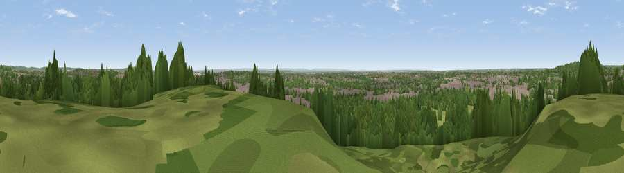

Horsenden Hill
#28420 in England · top 9% of its area beats it · near WembleyWhere it is
The exact computed spot (TQ 16175 84375). Click the marker for map links.
The view, rendered

A 360° render of this exact spot computed from the terrain model, tree cover and land cover — summer colours, afternoon light, calibrated against photographs of famous viewpoints. Real trees, hedges and buildings will differ in detail.
The panorama
Grey silhouette: terrain skyline in each direction (720 bearings, Earth curvature and refraction included). Dashed green: skyline with trees (+15 m) and buildings (+8 m) as obstacles. Blue strip: how far the ground is visible on each bearing.
Where the view opens
Wedge length = distance to the farthest visible ground on that bearing (vegetation-aware). Rings at 10, 25 and 50 km.
What fills the view
41% built-up · 37% woodland · 22% grassland ·
Angular shares of the visible panorama (visual magnitude), not map area. Landscape diversity 0.48 (0–1 Shannon).
Key numbers
More beautiful places nearby
The staircase of upgrades: each row has a higher view potential than everything closer. Driving times are estimates from straight-line distance, calibrated against real road routing — check an actual route before setting out.
| Place | Direction | Drive | Score |
|---|---|---|---|
| Harrow on the Hill | NNW · 3 km | ~8 min | 60.7 |
| Box Hill | S · 33 km | ~51 min | 70.4 |
| Viewpoint near Box Hill Village | S · 33 km | ~51 min | 71.0 |
| Viewpoint near Halton | NW · 38 km | ~56 min | 74.3 |
| Coombe Hill Monument | NW · 38 km | ~57 min | 75.5 |
| Wolstonbury Hill | S · 72 km | ~95 min | 79.6 |
| Viewpoint near Storrington | S · 72 km | ~96 min | 83.9 |
| Chanctonbury Ring | S · 72 km | ~96 min | 87.0 |
51.54632, -0.32601 · source: osm peak · position refined by local search. Computed location — check access rights before visiting.